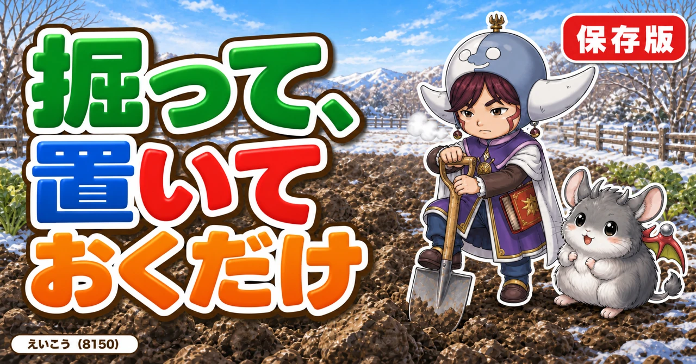
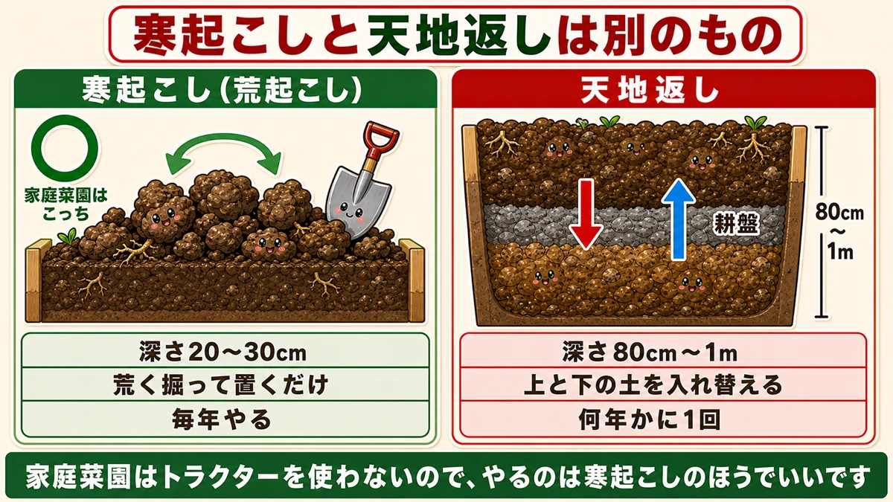
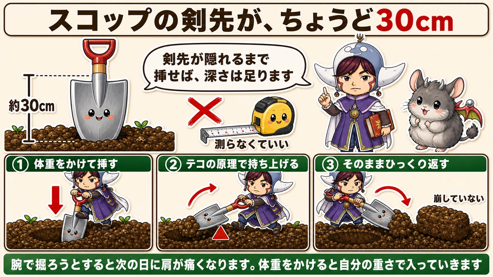
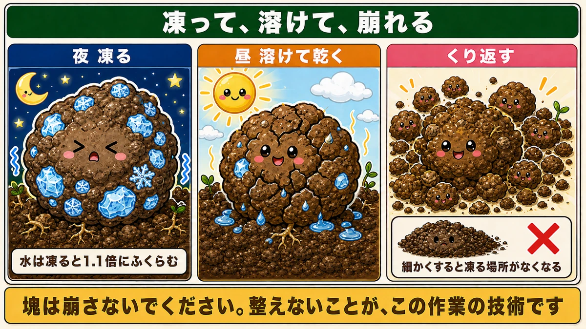
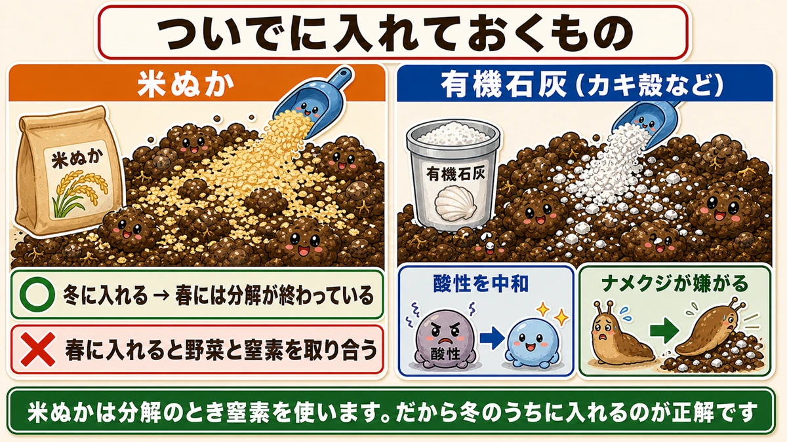

寒起こしのやり方｜冬に土を荒く掘って寒さにさらす手順・時期・天地返しとの違い・春までの流れ

どうも、8150（えいこう）です🌱 家庭菜園歴8年、理科の教員免許を持っていて、有機・無農薬で野菜を育てています。
📖 この記事の目次
この記事で分かること
- 寒起こしは、冬の空いている畑の土を、スコップなどで大きく掘り起こして、そのまま寒さにさらしておく作業です。
- 夜に凍って昼にとける、をくり返すうちに、土のかたまりが自然にほぐれて、ふかふかの土になると言われます。
- 土の中で冬を越している虫の幼虫を、掘り起こして見つけたり、寒さにさらしたりできます。
- 掘り起こした土のかたまりは、くずさずにそのまま置いておくのがコツです。
- 時期は、12月下旬から2月ごろの、いちばん寒い時期。1か月以上は寒さにさらしておきたいところです。
- 「天地返し」は、表面の土と深い土を入れかえる作業で、寒起こしとは別のものです。
冬の畑は、収穫が終わった畝が空いて、少しさびしい景色になりますよね。寒い朝は、畑に出るのもちょっとおっくうになります。「春まで、することがないな」と思っている方も多いかもしれません。
でも、実は冬にしかできない土の手入れがあります。それが「寒起こし（かんおこし）」です。冬の寒さの力を借りて、春に向けて土をふかふかにしておく作業です。
安心してください。やり方はとても簡単で、スコップ1本あれば始められます。特別な肥料や道具は、なにもいりません。必要なのは、少しの体力と、冬の厳しい寒さだけ。寒さの厳しい冬ほど、よく効いてくれます。この記事では、寒起こしのしくみから、やり方、時期、天地返しとの違い、春までの流れまで、順番に書いていきます。

早見：寒起こしの基本（ひと目で分かる目安）
寒起こしの目的
- 土をふかふかにする（凍って、とけてをくり返して、かたまりがほぐれる）
- 土の中で冬を越す虫を減らす
- 土に空気を入れる
やり方の流れ
- 空いている畝の、残った野菜や雑草を片づける
- スコップで、深さ20〜30cmくらいまで掘り起こす
- 掘った土を、ひっくり返して置く
- かたまりは、くずさずにそのまま
- そのまま1か月以上、寒さにさらす
- 春の土づくりの前に、かたまりをくずして、ならす
時期の目安
- 12月下旬から2月ごろの、いちばん寒い時期
- 2月中旬を過ぎると暖かくなってくるので、それまでに始めたい
- 寒さにさらす期間は、1か月以上（1〜2か月という説明も）
天地返しとの違い
- 寒起こし：表面から20〜30cmくらいの土を、荒く掘り起こして寒さにさらす
- 天地返し：表面の土と、その下の深い土を入れかえる。数年に1回くらい
冬の畑の流れの中での寒起こし
寒起こしは、1年の畑仕事の中で、秋と春をつなぐ作業です。
- 11月〜12月：秋冬野菜の収穫を進め、空いた畝を片づける
- 12月下旬〜2月：寒起こし。空いた畝を掘り起こして、寒さにさらす
- 2月下旬〜3月：かたまりをくずしてならし、たい肥や肥料を入れて土づくり
- 3月〜5月：春夏野菜の種まき、植えつけ
春の植えつけから逆算すると、土づくりは植える2〜3週間前、寒起こしはその1〜2か月前、ということになります。冬のうちに、どの畝をいつ寒起こしするか、ざっくり決めておくと安心です。
道具の選び方
- 剣先スコップ：先がとがっていて、かたい土にも差しこみやすい。寒起こしにいちばん向いている
- 角スコップ：先が平らで、土をすくうのに向いている。かたい土には差しこみにくい
- 備中ぐわ：先が何本かに分かれたくわ。土を掘り起こして、かたまりのまま返すのに向いている
- 耕うん機：広い畑なら便利。ただし、かたまりを細かくくだきすぎることがある
家庭菜園なら、剣先スコップ1本で十分です。ホームセンターで手軽に手に入りますし、ほかの畑仕事にも長く使えます。備中ぐわを使う場合は、振りおろすときに、まわりに人がいないか、真後ろに立っていないかを確かめてください。
作業の手順
ここからは、寒起こしのやり方を、順番に書いていきます。
手順1：寒起こしをする場所を決める
寒起こしは、冬のあいだ、野菜を植えていない場所で行います。
- 夏野菜や秋冬野菜の収穫が終わって、空いている畝
- 春に野菜を植える予定の場所
冬のあいだも野菜を育てている場所は、寒起こしはしません。根が張っている株を掘り起こすと、野菜が傷んでしまいます。
また、春にすぐ使う予定の場所でも、寒起こしのあと、寒さにさらす期間（1か月以上）がとれるかを確かめておきましょう。
寒起こしの前に確かめること
- その畝に、冬のあいだ育てている野菜がないか
- 春に植える予定までに、1か月以上寒さにさらす時間がとれるか
- 土がかちかちに凍っていないか、ぬかるんでいないか
- 病気の出た株が残っていないか
この4つを確かめてから始めると、失敗が少なくなります。
手順2：片づけをする
寒起こしの前に、残った野菜の茎や葉、雑草を片づけます。
収穫が終わった野菜の根は、土の中に残っていてもかまわない、という説明もあります。春までに分解されて、土の養分や、土のすき間になるという考え方です。ただし、病気が出ていた株の根や茎は、畑の外に持ち出して処分してください。
手順3：スコップで掘り起こす
スコップを、土に深く差しこみます。深さは、20〜30cmくらいが目安です。野菜の根がよく伸びる範囲が、だいたいこのくらいだからです。
- スコップを、足でしっかり踏みこんで、深く差す
- 土を持ち上げて、ひっくり返すように置く
- 少しずつ横にずらしながら、畝全体を掘り起こしていく
スコップで一度にたくさんの土を取ろうとすると、重くて大変です。1回に取る幅を少なめにすると、楽に作業できます。スコップを踏みこむときは、足をけがしないように、底のしっかりした靴をはいてください。

ひっくり返す向き
掘り起こした土は、ひっくり返して、表面にあった土が下に、下にあった土が上にくるように置くと、下の土にも寒さが当たりやすくなります。ただ、天地返しのように、深い土を表面に持ってくるほど深く掘る必要はありません。スコップの刃が入る深さで、ひっくり返すくらいで十分です。
手順4：かたまりは、くずさない
掘り起こした土は、大きなかたまりのまま、ごろごろと置いておきます。ここが、寒起こしでいちばん大事なところです。
かたまりを細かくくずしてしまうと、寒さがかたまりの中に入りこむすき間が少なくなり、凍ったりとけたりする効果が出にくくなります。かたまりのまま置いておくことで、冬の寒さが、かたまりの表面からじわじわと中まで入りこんで、自然にほぐしてくれるんです。
畝の形をきれいに整える必要もありません。荒く掘り起こして、そのまま置いておくだけで大丈夫です。
手順5：通路もついでに
冬のあいだに、何度も歩いて踏み固められた通路の土も、ついでに掘り起こしておくと、春に畝を作りなおすときに楽になります。
通路の雑草の根の近くには、虫の幼虫がひそんでいることもあります。雑草を抜くときに、土の中もちょっと確かめてみてください。
手順6：見つけた幼虫は取り除く
掘り起こしていると、土の中から白い幼虫（コガネムシの幼虫など）や、茶色いさなぎ（ヨトウムシなど）が出てくることがあります。
見つけたら、取り除いてください。土の中で冬を越している虫を、ここで減らしておくと、春からの被害を減らすことにつながります。春になって、植えたばかりの苗が根元から倒れていた、という被害を減らす助けにもなります。
掘り起こされた幼虫は、冬の寒さにさらされることになります。また、鳥が見つけて食べてくれることもあります。
雑草の根も取り除く
掘り起こしていると、雑草の根がたくさん出てくることがあります。特に、地下に根を張って増えるタイプの雑草（多年草）の根は、残しておくと春にまた生えてきます。
見つけた根は、できるだけ取り除いておきましょう。寒起こしの作業は、土の中の雑草の根を減らす、いい機会でもあります。
手順7：1か月以上、そのままにしておく
掘り起こしたら、あとはそのまま、寒さにさらしておきます。
期間は、約1か月、最低でも1か月以上、1〜2か月、など、説明によって少しずつ違います。いちばん寒い時期を、しっかり経験させることが大切です。
雨や雪が降っても、そのままで大丈夫です。冬の雨や雪も、土のかたまりをほぐすのを手伝ってくれます。雪が積もったら、雪の下で土がゆっくり冷やされて、春の雪解けの水が、土のかたまりにしみこんでいきます。何もしなくていいので、気楽に待ってください。
寒さにさらしているあいだの見回り
寒起こしをしたあとは、基本的にそのまま置いておくだけで大丈夫ですが、ときどきようすを見に行きましょう。冬の畑は人の出入りも少ないので、見回りのついでに、ほかの畝の冬野菜のようすも確かめておくと安心です。
- 強い風で、土が飛ばされていないか
- 雨で、かたまりがくずれて水たまりができていないか
- 鳥が、掘り起こした土の虫を食べに来ているか
鳥が土をつついているのは、虫を食べてくれているサインです。追い払わずに、そのまま見守ってあげてください。冬の畑で働いてくれる、ありがたい助っ人です。
手順8：春の土づくりの前に、ならす
寒さにさらす期間が終わったら、春の土づくりに移ります。
- 寒さでほぐれたかたまりを、くわなどで軽くくずす
- それでも残っている大きなかたまりは、くわでくだく
- 表面をならす
- たい肥や肥料を入れて耕し、畝を作る
寒さにさらしたあとの土は、さらさらとして、ほぐれやすくなっていることが多いです。冬の前と比べてみると、手ざわりの違いに驚くかもしれません。湿った土を軽く握るとまとまり、指で押すとくずれるくらいが、いい状態です。
ただし、すべてのかたまりが同じように細かくなるわけではありません。大きなかたまりが残っていたら、くわでくずせば大丈夫です。
春の土づくりまでの逆算スケジュール
5月に夏野菜を植える場合の例です。
- 1月：寒起こし。土を掘り起こして、寒さにさらす
- 2月：そのまま寒さにさらす
- 3月中旬〜下旬：かたまりをくずしてならす。たい肥を入れる
- 4月上旬〜中旬：肥料を入れて耕し、畝を立てる。マルチを張る
- 4月下旬〜5月：苗を植える
3月にじゃがいもを植える場合は、もっと早めに進める必要があります。じゃがいもの場所は、12月中に寒起こしを始めておくと安心です。
なぜ、ふかふかになるのか
夜に凍って、昼にとける
冬の夜、気温が下がると、土のかたまりの中の水分が凍ります。水は凍ると、体積が少しふくらみます。かたまりの中で水が凍ってふくらむと、内側から押し広げられて、かたまりに小さなひびが入ります。
昼になって気温が上がると、氷がとけて、土が乾いていきます。これを何度もくり返すうちに、ひびがどんどん広がって、大きなかたまりが自然に細かくくずれていくんです。

だから、細かく耕してはいけない
かたまりのまま置いておくと、寒さがかたまりの外側から入りこみ、凍ったりとけたりする変化が、かたまりの中まで起きやすくなります。
最初から細かく耕してしまうと、土が詰まって、かえって寒さや空気が入りにくくなることがあります。寒起こしで「荒く掘るだけ」が大切なのは、このためです。
わざと凍らせる、という方法も
寒さが足りない地域や、暖かい冬には、夕方に掘り起こした土に水をまいて、夜のあいだに凍りやすくする、という方法を紹介する人もいます。ただ、これは補助的な方法で、毎日やる必要はありません。
土の種類による違い
寒起こしの効果は、畑の土の種類によっても変わります。
- 粘土質の土：かたく締まりやすく、大きなかたまりになりやすい。寒起こしの効果がいちばん分かりやすい土
- 砂の多い土：もともとさらさらしていて、かたまりになりにくい。寒起こしの効果は、粘土質ほど目立たない
- 黒っぽい、有機物の多い土：ふかふかになりやすい。状態がよければ、無理にしなくてもいい
粘土質で、水はけが悪く、雨のあとにかたまりやすい畑ほど、寒起こしの効果を実感しやすいと思います。
土の中の虫を減らす
虫は、土の中で冬を越している
畑の虫の多くは、冬になると、土の中にもぐってじっとしています。コガネムシの幼虫、ヨトウムシのさなぎ、ネキリムシなどが、土の浅いところで冬を越しています。
そのまま春を迎えると、暖かくなってから一斉に動き出して、植えたばかりの苗を食べてしまいます。
掘り起こして、寒風にさらす
寒起こしで土を掘り起こすと、土の中にいた幼虫やさなぎが、地表に出てきます。見つけたものは取り除き、見つけきれなかったものも、冬の寒さや乾燥にさらされたり、鳥に食べられたりします。
ただし、寒起こしで、すべての虫がいなくなるわけではありません。春になってからも、畑の見回りは続けてください。
ついでに入れておくもの
米ぬかや、たい肥
寒起こしのときに、米ぬかやたい肥などの有機物を入れておく方法もあります。冬のあいだにゆっくり分解が進んで、春の土づくりの助けになる、という考え方です。
一方で、米ぬかなどは入れなくてもいい、寒起こしのあとの春の土づくりで補えばいい、という説明もあります。入れる場合は、量を控えめにしてください。

生の野菜くずは、入れすぎない
収穫が終わった野菜の葉や茎を、生のまま土に入れると、分解のときにガスが出たり、においが出たり、病気のもとになったりすることがあります。冬は分解がゆっくりなので、春になっても分解しきれずに残ることもあります。
野菜くずを使うなら、乾かして細かくしてから入れるか、たい肥にしてから使うのがおすすめです。病気が出ていた野菜は、入れないでください。
石灰を入れるなら、春の土づくりで
土の酸度を調整するために石灰を入れる場合は、寒起こしのときではなく、春の土づくりのときに入れるのが一般的です。植えつけの2週間くらい前までに入れて、土になじませます。
じゃがいもを植える場所は、石灰を入れすぎると病気が出やすくなるので、入れないか、控えめにしてください。
天地返しとの違い
天地返しとは
天地返しは、表面の土と、その下の深い土を入れかえる作業です。長年使って、表面の土が疲れてきた畑や、病気が続く畑で行われます。
寒起こしとの違い
- 寒起こし：表面から20〜30cmくらいの土を、荒く掘り起こして、寒さにさらす。毎年でもできる
- 天地返し：表面の土と、その下（40cm〜1mくらい）の土を入れかえる。数年に1回くらい
天地返しは、深く掘るので、とても大変な作業です。農家さんでは、重機を使って1m近く掘ることもあります。家庭菜園で行うなら、無理のない範囲で、数年に1回、くらいに考えてください。
天地返しをするなら
天地返しをする場合のやり方の一例です。
- 畝の端に、深さ40cm〜60cmくらいの溝を掘る。掘った土は、表面の土と下の土を分けて置いておく
- 隣の部分の表面の土を、溝の底に落とす
- その下の深い土を、上にのせる
- これをくり返して、畝全体の上下を入れかえる
深い土は、養分が少なく、かたいこともあります。天地返しのあとは、たい肥をしっかり入れて、土づくりをしてください。また、深い土に石や、かたい層がある場合は、それを表面に持ってこないように気をつけます。
家庭菜園で深く掘るのは、かなりの重労働です。病気が何年も続く畑や、表面の土がすっかり疲れてしまった畑で、数年に1回考える、くらいで十分だと思います。
寒起こしのあとに、天地返しはしない
寒起こしでせっかくふかふかになった表面の土を、天地返しで深いところに入れてしまうと、その効果が下にいってしまいます。両方を同じ冬に続けて行うのは、おすすめしない、という説明があります。
区画ごとに使い分ける
畑のすべてを、同じ冬に寒起こしする必要はありません。
- 春にすぐ使う場所（じゃがいも、春の葉物など）：12月中に早めに寒起こしを始める
- 5月ごろに使う場所（夏野菜など）：1月に寒起こしをしても、春の土づくりに間に合う
- 夏まで空ける予定の場所：寒起こしのあと、たい肥を入れて、ゆっくり土を休ませる
使う時期に合わせて、寒起こしの順番を決めると、作業がスムーズになります。
やらないほうがいい畑
すでにふかふかの畑
水はけも、通気性もよく、野菜がよく育っている畑なら、無理に寒起こしをする必要はありません。土の中のよい微生物まで減らしてしまう可能性もある、という説明もあります。土の状態がいい畑は、そのままにしておく、という選択もあります。
下に石やかたい層がある畑
深く掘ると、下のほうにある石や、かたい層が、表面に出てきてしまうことがあります。そういう畑では、深く掘りすぎないように注意してください。
土が凍りついて、スコップが入らないとき
土がかちかちに凍っているときは、無理に作業しないでください。スコップが入りにくく、けがをすることもあります。日中、気温が上がって、土がとけてから作業しましょう。
雨のあとで、土がぬかるんでいるとき
雨のあとで、土がどろどろにぬかるんでいるときに掘ると、土がこねられて、かえってかたまってしまうことがあります。少し乾いてから作業してください。
寒い日の作業の注意
寒起こしは、1年でいちばん寒い時期の作業です。
- 作業の前に、軽く体を動かして、体を温めておく
- 手袋をして、手がかじかまないようにする
- 汗をかいたら、そのままにせず、着替えるか上着を着る
- 1日に無理をせず、少しずつ進める
体が冷えていると、スコップを踏みこむときに腰や足を痛めやすくなります。自分の体も大事にしながら、ゆっくり進めてください。
失敗の見分け方
春になっても、かたまりがほぐれていない
- 寒さにさらす期間が短かった
- その冬が暖かく、あまり凍らなかった
- かたまりを細かくしすぎて、寒さが入りにくかった
大きなかたまりが残っていても、くわでくずせば大丈夫です。
春に、生の野菜くずが残っていた
冬は分解がゆっくりなので、生の野菜くずが残ることがあります。取り除いてから土づくりをしてください。
寒起こしをしたのに、春に虫の被害が出た
寒起こしで、すべての虫がいなくなるわけではありません。春になってからも、苗を植えたあとの見回りを続けてください。
掘った土が、雨でぺしゃんこになった
冬の雨が続くと、掘り起こした土のかたまりが、雨でくずれて平らになってしまうことがあります。それでも、一度掘り起こして空気を入れたことには意味があります。気になるなら、晴れが続いたあとにもう一度、荒く掘り起こしてみてください。
春になったら、土がかたくなっていた
雨のあとにぬかるんだまま作業したり、掘り起こした土の上を歩いてしまったりすると、かえって土が締まることがあります。寒起こしをした畝の上は、なるべく歩かないようにしてください。
説明が分かれていること
寒起こしの時期
- 12月下旬から2月の、いちばん寒い時期
- 年末年始から大寒がベスト。2月はラストチャンス
- 年内の12月に始めて、1〜2か月寒さにさらす
- 1月の早い段階に行う
地域や、その年の寒さによって変わります。いちばん寒い時期を、1か月以上さらせるように始める、と考えてください。
寒さにさらす期間
- 約1か月
- 最低でも1か月以上
- 1〜2か月
いずれにしても、1か月くらいは見ておきたいところです。
道具は、スコップか、耕うん機か
- 持っている道具でかまわない。管理機やトラクターでもできる、という説明
- ふつうの耕うん機だと浅く、かたまりを細かくくだきすぎるので、スコップがいい、という説明
かたまりを大きく残すという寒起こしの目的からすると、スコップのほうが向いています。
菌への効果
- 冬の冷気で、土の中の病気のもとを減らす、という説明
- 寒さそのものより、空気にふれる環境の変化が影響しているのではないか、という説明
- 寒さで、よい微生物も減ってしまうかもしれない、という説明
寒起こしの菌への効果は、はっきり分かっていない部分もあります。病気を防ぐことを主な目的にするより、土をふかふかにする作業と考えておくといいと思います。
天地返しの深さと回数
天地返しの深さは、40cm、50cm、60cm、70cm、1mと、説明によってさまざまです。回数も、数年に1回、毎年1回、土がいいならしなくていい、など分かれています。家庭菜園では、無理のない範囲で行ってください。
よくある質問
Q. 寒起こしは、毎年やったほうがいいですか？
A. 空いている畝があるなら、毎年やってもかまいません。ただ、土の状態がよく、野菜がよく育っている畑なら、無理にする必要はありません。土がかたくなってきた、水はけが悪くなってきた、と感じたらやる、という考え方でも大丈夫です。
Q. 雪の多い地域でも、寒起こしはできますか？
A. 雪が積もる前に掘り起こしておけば、雪の下でも、ある程度の効果は期待できます。ただ、雪が長く積もっている地域では、凍ったりとけたりのくり返しが起きにくいこともあります。雪が解けてから、春の土づくりの前に、もう一度土の状態を確かめてください。
Q. 暖かい地域でも、効果はありますか？
A. 土が凍るほど冷えない地域では、凍ったりとけたりの効果は出にくくなります。それでも、土を掘り起こして空気を入れること、虫の幼虫を見つけて取り除くことには意味があります。
Q. プランターの土でもできますか？
A. プランターの古い土を、冬のあいだに広げて寒さにさらしておく方法もあります。ブルーシートなどの上に土を広げて、古い根やごみを取り除いておくと、春に土を再生して使うときの準備になります。
Q. 寒起こしのあと、すぐに肥料を入れて畝を作ってもいいですか？
A. 寒起こしは、寒さにさらす期間が大切です。掘り起こしてすぐに畝を作ってしまうと、寒さにさらす効果が得られません。1か月以上さらしてから、春の土づくりに移ってください。また、肥料を入れて畝を作ったら、植えつけまで2週間以上あけるのが目安です。
Q. 寒起こしをしたのに、春にまた土がかたくなりました
A. 寒起こしでほぐれた土も、雨や、上を歩くことで、時間がたつとまた締まっていきます。寒起こしのあとは、春の土づくりでたい肥などの有機物をしっかり入れて、土の中の生き物が住みやすい土にしていくことが大切です。毎年、たい肥を入れ続けることで、少しずつかたくなりにくい土になっていきます。
Q. 寒起こしのあと、春までに肥料を入れておいたほうがいいですか？
A. 肥料は、春の土づくりのときに入れれば十分です。冬のあいだに肥料を入れても、寒くて分解が進みにくく、雨で流れてしまうこともあります。寒起こしの期間は、土を寒さにさらすことに専念させてあげてください。
Q. 寒起こしの深さは、測ったほうがいいですか？
A. 細かく測る必要はありません。スコップの刃を、足で踏みこんで深く差しこめば、だいたい20〜30cmくらいの深さになります。持っているスコップでできる範囲の深さで大丈夫です。大切なのは、深さを正確にすることより、土を荒く掘り起こして、寒さにさらすことです。
Q. 寒起こしのときに、もみ殻や落ち葉を混ぜてもいいですか？
A. 乾いたもみ殻やわら、落ち葉などを混ぜておく方法もあります。春までにゆっくり分解されて、土の中にすき間を作ってくれます。ただ、量が多すぎると、分解のときに土の中の窒素が使われて、春に植えた野菜の育ちが悪くなることがあります。混ぜる量は控えめにして、春の土づくりで肥料を少し補ってください。
Q. 寒起こしは、子どもと一緒にできますか？
A. 小さなスコップを使えば、子どもも一緒に楽しめます。土の中から虫の幼虫やミミズが出てきたり、霜柱が立っていたりと、冬の畑ならではの発見がたくさんあります。春になって、ほぐれた土をさわって比べてみるのも、いい体験になりますよ。
Q. 寒起こしをした畝と、しなかった畝で、違いは出ますか？
A. 粘土質の畑ほど、違いが分かりやすいと思います。春に土をさわってみると、寒起こしをした畝のほうが、さらっとほぐれやすくなっていることが多いです。1畝だけ寒起こしをして、隣の畝と比べてみると、効果を自分の手で確かめられます。
Q. 寒起こしのあと、雑草が生えてきました
A. 冬でも、寒さに強い雑草は生えてきます。小さいうちに抜いておけば大丈夫です。春の土づくりのときに、まとめて取り除いてもかまいません。
Q. 初めて畑を借りました。寒起こしをしたほうがいいですか？
A. 前にどう使われていたか分からない畑や、土がかたい畑なら、寒起こしはいい準備になります。掘り起こしながら、土の状態や、石の多さ、虫のようすなどを確かめることもできます。初めての畑を知る、いい機会になりますよ。
Q. 寒起こしをした場所に、冬のあいだ何か植えてもいいですか？
A. 寒起こしをした場所は、寒さにさらしておくのが目的なので、冬のあいだは何も植えずにおいてください。春の植えつけまで、そのまま休ませておきましょう。
Q. 寒起こしは、何時ごろに作業するのがいいですか？
A. 土がかちかちに凍っている早朝は避けて、日が高くなって土がとけてくる昼前後に作業するのがおすすめです。寒い時期の作業なので、体を冷やしすぎないように、暖かい格好で行ってください。
Q. 掘り起こしたとき、土の中にミミズがたくさんいました
A. ミミズは、土を耕し、ふかふかにしてくれる、畑の味方です。ミミズがたくさんいるのは、土の中の有機物が豊かで、いい土である証拠でもあります。見つけたら、そっと土に戻してあげてください。
Q. 寒起こしをすると、腰が痛くなりそうです
A. スコップで土を掘り起こすのは、体力のいる作業です。一度に全部やろうとせず、1日に1畝ずつなど、少しずつ進めてください。1回に取る土の量を少なめにすると、体への負担も軽くなります。寒い日は体が冷えて、けがをしやすいので、準備運動をしてから始めましょう。
学ぶ🔬 土の団粒構造と、寒起こし
ここからは、寒起こしと土のしくみについて、少しだけ深く書いておきます。読み飛ばしても大丈夫です。
ふかふかの土の正体
野菜がよく育つふかふかの土は、小さな土の粒が集まって、さらに大きな粒（団粒）を作っている状態です。団粒と団粒のあいだにはすき間があって、そこを水や空気が通ります。
団粒がたくさんある土は、水はけがよいのに、水もちもよい、という野菜にとって理想的な状態です。
寒起こしで、かたまりが団粒に近づく
かたく締まった土は、大きなかたまりになっていて、すき間が少なく、水や空気が通りにくくなっています。
寒起こしで、凍ったりとけたりをくり返すと、大きなかたまりにひびが入って、細かくくずれていきます。そうしてできた細かい粒のあいだにすき間ができて、水や空気が通りやすい土に近づいていきます。
ただ、本当の意味での団粒を作るには、土の中の微生物や、たい肥などの有機物の働きも必要です。寒起こしで土をほぐしたあと、春の土づくりでたい肥を入れることで、ふかふかの土に近づいていきます。
冬の土の中の微生物
冬の寒さの中では、土の中の微生物も、動きがにぶくなってじっとしています。寒起こしで寒さにさらすと、その一部は減ってしまうこともあります。
でも、春になって暖かくなり、たい肥などの有機物が入ると、微生物はまた増えていきます。寒起こしのあとの春の土づくりで、たい肥をしっかり入れるのは、土の中の生き物を元気に呼び戻すためでもあるんです。
霜柱と寒起こし
冬の朝、畑で霜柱を見かけることがありますよね。霜柱は、土の中の水分が地表に吸い上げられて、次々に凍って柱のように伸びたものです。
霜柱が立つと、土の表面が持ち上げられて、ふわっとくずれます。寒起こしで掘り起こした土のかたまりでも、同じようなことが、かたまりの表面や内側で起きています。霜柱が立つような寒い朝は、寒起こしの土にとって、ほぐれるチャンスなんですね。
粘土の土は、なぜかたまりやすいのか
粘土は、とても細かい粒でできています。細かい粒は、水を含むとぴったりくっつき合い、乾くとかたくかたまります。そのため、粘土の多い土は、雨のあとにねばり、乾くとかちかちになりやすいんです。
寒起こしで凍ったりとけたりをくり返すと、このかたまりにひびが入って、ほぐれていきます。粘土の多い畑ほど寒起こしの効果を感じやすいのは、このためです。
なぜ空気を入れると、土がよくなるのか
土の中の根や、多くの微生物は、呼吸をしています。土がかたく締まっていると、空気が入りにくく、根や微生物が呼吸しにくくなります。
寒起こしで土を掘り起こすと、土の中に空気が入ります。春に向けて、根や微生物が働きやすい環境を、冬のうちに準備しておけるんです。
まとめ
ここまで読んでくださって、ありがとうございます！
寒起こしのポイントを、もう一度まとめておきます。
- 寒起こしは、冬の空いた畑の土を荒く掘り起こして、寒さにさらす作業
- 夜に凍って昼にとける、のくり返しで、かたまりがほぐれてふかふかになる
- 深さは20〜30cmくらい。スコップで掘り起こす
- かたまりは、くずさずにそのまま置いておく
- 見つけた幼虫やさなぎは取り除く
- 時期は12月下旬から2月ごろ。1か月以上寒さにさらす
- 天地返しとは別の作業。同じ冬に続けて行わない
- 土の状態がいい畑なら、無理にしなくていい
- 春の土づくりの前に、かたまりをくずしてならす
冬の畑は、寒くて作業がつらい季節ですが、寒起こしは、その寒さを味方にできる作業です。スコップで掘り起こしておけば、あとは冬の寒さが、じっくりと土を耕してくれます。人がすることは、最初に掘り起こすことと、春にならすことだけ。そのあいだの1〜2か月は、自然の力にまかせて、のんびり待っていればいいんです。冬の寒さが厳しい年ほど、春の土の仕上がりが楽しみになりますよ。
まずは、空いている畝を1本だけでいいので、スコップで大きく掘り起こしてみてください。春、ほぐれた土を手にとったときの感触に、きっと驚きますよ🌱
備中鍬
スコップで掘り起こしたあと、粗く砕くのに使います。三本爪なので土に刺さりやすく、テコの原理で持ち上げやすい。ただし細かく耕さないでください。塊のままのほうが、凍って溶けての回数が増えて効きます。
![[商品価格に関しましては、リンクが作成された時点と現時点で情報が変更されている場合がございます。]](https://hbb.afl.rakuten.co.jp/hgb/56d752c3.3ce6fd3b.56d752c4.f8896826/?me_id=1209220&item_id=10002030&pc=https%3A%2F%2Fthumbnail.image.rakuten.co.jp%2F%400_mall%2Fhonmamon-r%2Fcabinet%2Fimg3%2Fw4580149745643.jpg%3F_ex%3D240x240&s=240x240&t=picttext "[商品価格に関しましては、リンクが作成された時点と現時点で情報が変更されている場合がございます。]")

米ぬか
掘り返した塊の上にふりかけておきます。米ぬかは分解のときに窒素を使うので、冬のうちに入れるのが正解です。春に入れると野菜と窒素を取り合います。2〜3か月で分解が終われば、植えるころには問題になりません。
![[商品価格に関しましては、リンクが作成された時点と現時点で情報が変更されている場合がございます。]](https://hbb.afl.rakuten.co.jp/hgb/56d21cb1.eebb183f.56d21cb2.51de80a8/?me_id=1247635&item_id=10000021&pc=https%3A%2F%2Fthumbnail.image.rakuten.co.jp%2F%400_mall%2Feco-hiryo%2Fcabinet%2Fitem6%2Fset-1-a1.jpg%3F_ex%3D240x240&s=240x240&t=picttext "[商品価格に関しましては、リンクが作成された時点と現時点で情報が変更されている場合がございます。]")
カキ殻石灰（有機石灰）
雨が降るたび土は酸性に傾きます。石灰はこれを中和します。そしてナメクジは酸性の土を好むので、中和しておくと居心地が悪くなります。苦土石灰よりゆるやかに効くので、入れすぎの失敗が起きにくいです。
![[商品価格に関しましては、リンクが作成された時点と現時点で情報が変更されている場合がございます。]](https://hbb.afl.rakuten.co.jp/hgb/56d21b6a.c19127f6.56d21b6b.c5473e84/?me_id=1258048&item_id=10000067&pc=https%3A%2F%2Fthumbnail.image.rakuten.co.jp%2F%400_mall%2Fkaneashop%2Fcabinet%2F12084383%2F12419790%2Fimgrc0108924525.jpg%3F_ex%3D240x240&s=240x240&t=picttext "[商品価格に関しましては、リンクが作成された時点と現時点で情報が変更されている場合がございます。]")